Quokkas Pull Away Late
in 3rd Quarter to Defeat Flemish Giants 163-133; Chris Cork Named MVP with
15 catches and 7 touchdowns; Tony Cork Sets New Touchdown Pass Mark with
22; Trimble Leaves Injured in 2nd Quarter; Sanders Throws 19 touchdowns
and Howard Sets New Single-Game Touchdown Reception Mark with 10 in Defeat
Click Here for Stats
(Click Here
for More Pictures! (thanks
to Joe Trimble)
Saturday, November 17th - The majority
of pregame talk heading into Cork Bowl 17 was about the three Cork Bowl
veterans that were missing the game (Reggie Truitt, Willy Truitt and Ryan
Tomlinson). Many doubters wondered how this year's game would live up to
the high expectations 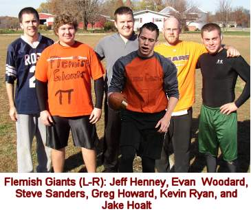 after last year's thrilling contest. Those doubters were silenced
on Saturday, thanks in part to the suprising play of Chris Cork and the
historic performance by quarterback Tony Cork. The Quokkas used a 30-0 run
that began late in the third quarter to cruise to a 163-133 victory over
the Flemish Giants. "They must have found a fountain of youth somewhere,"
remarked Flemish Giant receiver Jeff Henney. "They were both outstanding
from start to finish."
The weather and field played no factor
in this year's game as the field was dry and the temperature crept into
the low 60's by game's end. The perfect conditions led to an offensive explosion,
the likes of which hadn't been seen in ten years. The Flemish Giants started
the game with the ball and came out firing in a no-huddle offense. Sanders
was off the mark on his first two throws, but completed a long pass to Jake
Hoalt and then found Greg Howard in the endzone for a 6 yard score and a
7-0 lead. The Quokkas found themselves in a tough spot on their first drive
as they were faced with a 4th and 15 deep in their own territory. Tony Cork
was able to find Patrick near the sideline for the first down and then hit
Chris Cork for a 17 yard score on the next play to tie the score at 7-7.
The Flemish Giants answered with a 30 yard pass to Howard 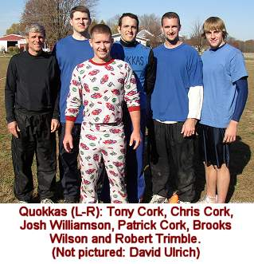 and an 8 yard touchdown
to Jeff Henney for a 14-7 advantage. The Quokkas followed with a two-play
drive of their own with a 25 yard completion to Chris and a 13 yard touchdown
to Wilson to knot the game at 14-14. The teams continued the torrid pace
as Howard caught his second touchdown of the quarter (VIDEO) and Wilson was able to stretch the ball across
the goal line for his second score as well (VIDEO). Quick scores from Henney and Chris pushed
the game to 28-28 with 5 minutes still left in the quarter.
"We were completely caught off
guard with their no-huddle offense," said Patrick Cork. "They
were on the line and going within seconds after every play and our defense
had holes everywhere. We figured they would start huddling at some point,
but they never did. They kept the pressure on us all game long." With
the Flemish Giants driving again, some solid defense from Wilson led to
the first defensive stop of the game as he knocked down a pass intended
for Henney on 4th and 10. It took the Quokkas just one play to take advantage
as Tony found Chris in the corner of the endzone for his third score of
the game and the Quokkas had their first lead of the day at 35-28. Howard
caught his third touchdown of the period on the Giants' final possession
of the quarter as the game was tied 35-35 at the end of the first quarter.
The two offenses dominated the opening
frame. Steve Sanders, making only the second start at quarterback of his
career, was 13-for-21 with 5 touchdowns while veteran Tony Cork 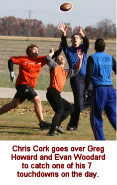 was 13-18 with 5
touchdowns. Greg Howard and Jeff Henney each had 5 catches with Howard scoring
three times and Henney twice. Chris Cork, who hauled in just two passes
in last year's game hauled in 6 passes for three scores while Brooks Wilson
had 3 catches and 2 touchdowns. "We knew it was going to be a high
scoring game after that first quarter," added Chris Cork. "With
their no-huddle offense, the points kept piling up."
The momentum the Quokkas gained after
the stop late in the first quarter didn't last long as they failed to convert
on 4th and 20 and turned the ball over to the Flemish Giants deep in their
own territory to start the second quarter. Sanders found Howard again for
a 14-yard touchdown and the Flemish Giants regained the lead at 42-35. Robert
Trimble made his first big play with a nifty catch and run that went the
length of the field for 38 yards to tie the score at 42-42 (VIDEO). Howard
caught a touchdown from Sanders for the third consecutive drive on a 4th
and 2 play to push the lead to 49-42 (VIDEO), but Patrick Cork responded with a diving
32 yard touchdown grab (VIDEO) to knot the game at 49 apiece with 16:25
left in the half. Sanders quickly found Henney for a 23-yard score on the
next drive and the Flemish Giants once again took the lead at 56-49 (VIDEO).
The Quokkas suffered a huge loss on
the next possession as Robert Trimble suffered a nasty sprained ankle on
a first down reception and had to be helped off the field with just over
12 minutes to play in the half. Three plays later, Tony found Patrick from
16 yards out for a touchdown to tie the score at 56-56. The completion to
Patrick would start an unprecedented stretch for Tony Cork over the next
50 minutes of play. Trimble attempted to come back on the next possession,
but Kevin Ryan shook off an attempted tackle from him for a 16 yard touchdown
and a 63-56 advantage in what turned out to be his last play of the game.
"Losing Robert was a very tough blow for us," stated 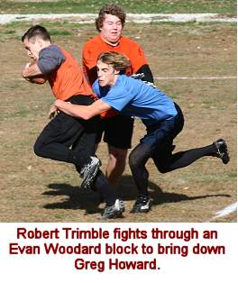 Tony Cork.
"He was our fastest player and was in the best shape of any of our
guys. We really had no idea what we were going to do - especially on defense
when he went down.We had no way of guarding Greg, so we were switching all
of our guys onto him for a few plays at a time and were just hoping to survive."
The next drive was all Corks as Tony
went to Patrick for 10 yards, Chris for 12 and 14 and then Patrick for a
two-yard score to make the score 63-63 with just over five minutes to play.
David Ulrich, who had actually appeared as a spectator just minutes after
Trimble's injury took his spot on defense. "David is fast and loves
the game, but we had no idea what to expect from him," added Brooks
Wilson. "We were hoping he could provide us some energy, but we had
no idea what to expect. He did a nice job for us, especially considering
he wasn't planning on playing." Howard capped off a tremendous first
half with his sixth touchdown of the day to put the Flemish Giants back
on top 70-63, but Tony found Wilson on back-to-back 19 yard passes to tie
the game at 70 with 1:12 to go (VIDEO). With just
over a minute to go, the Flemish Giants were hoping to milk the clock and
put up a late score and head into halftime with a lead. They advanced the
ball inside the 10 yard line as the Quokkas were 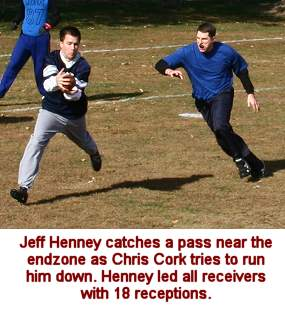 forced to burn
all three of their timeouts hoping for one extra possession. The strategic
move backfired as Howard was unable to haul in a laser from Sanders in the
back of the endzone on 4th down and the Giants failed to score. "We
were trying to make sure we scored with as little time left as possible,"
said Henney. "We were throwing short passes and trying to run out the
clock, but we didn't execute at the end."
The Giants were able to run the clock
all the way down to 10 seconds and the Quokkas had no timeouts remaining.
Tony found Chris on a deep corner near the sideline and Chris stepped out
of bounds just past midfield with one second left on the clock giving the
Quokkas one more play. The Quokkas ran the exact same play as Tony found
Chris in the corner of the endzone for a touchdown with no time left and
suddenly the Quokkas had a 77-70 lead. (VIDEO) "With Coach's arm, we couldn't go for
a hail mary so we had to try to get half of it and get out of bounds,"
said Patrick. "We executed back-to-back plays exactly like we wanted
and Chris made a great play to get out of bounds just in time."
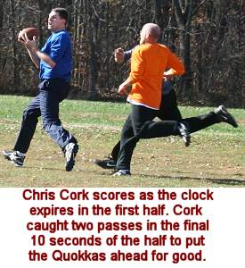 The touchdown
capped off an amazing first half for Chris as he had 10 catches and 4 touchdowns.
Tony was locked in late in the quarter as he completed his final 9 passes
and went into halftime 28-for-38 with 11 touchdowns. Steve Sanders was 14-for-22
in the quarter and went into the half 27-for-43. Greg Howard had a dominating
half as he hauled in 8 passes and scored 6 times. Henney led all players
with 11 first half receptions, including 3 touchdowns.
The late score for the Quokkas was
a momentum changer because they also had possession to start the second
half. Tony completed four straight passes and found Josh Williamson for
his first touchdown of the day and the Quokkas had the first two-score lead
of the game at 84-70. The Flemish Giants nearly 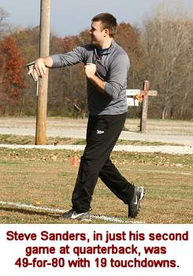 turned the ball
over on downs as they were faced with a 4th and 20, but Henney was able
to draw a pass interference penatly on Wilson that gave the Giants a first
down and Sanders found Howard on the next play for a 16 yard score to make
the game 84-77 (VIDEO). Tony led the Quokkas across midfield, although
Wilson nearly fumbled the ball away as he bobbled the ball near the sidelines
before regaining possession. Two plays later, Tony's pass for Wilson was
knocked away by Greg Howard ending a string of 17 straight completions for
the old Coach. That brought up a critical 4th and 1 situation and Tony connected
with Chris on the next play with a perfect lob into the back of the endzone
just inches over the outstretched arms of Greg Howard for a 91-77 advantage
(VIDEO). Kevin Ryan and Patrick Cork traded touchdowns,
and Howard tied the single-game record with his 8th touchdown grab to make
the game 98-91.
With under five minutes to play in
the third quarter, the Quokkas put together a run that put the game out
of reach for good. Tony found Williamson for a 12 yard score to make the
lead 105-91 (VIDEO), but the Flemish Giants marched down the
to six yard line on their next drive and were poised to cut the lead in
half again. However, Sanders' pass for Henney was a bit high and deflected
off Henney's hand into the back of the endzone where Patrick Cork was waiting
for the interception and the first turnover of the game (VIDEO). The Quokkas wasted no time as Tony hit Chris
for 32 yards and Wilson for a 6-yard score to push the lead to 21 points
at 112-91 with under two minutes to play. On the second play on the following
series, Evan Woodard's snap sailed over the head of Sanders and out of the
endzone for a rare safety which moved the score to 114-91. The Quokkas took
possession after the safety and Tony found Chris in the flat for a big gain
as Chris shook a defender with a nice cut-back and took it the length of
the field for a 38 yard score and a 121-91 lead on the 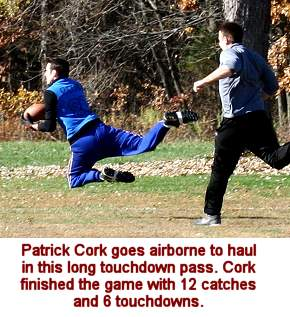 final play of
the third quarter (VIDEO).
"Everything happened so fast
I wasn't sure what was going on," recalled Patrick. "We had gone
back and forth all game and there was a flurry of activity and suddenly
we had a big lead." The extra possession from the safety resulted in
lopsided numbers for the quarter as Sanders was just 7-for-15 with three
touchdowns. Tony continued his torrid streak as he connected on 18-of-19
passes in the period for 6 touchdowns as the Quokkas outscored the Flemish
Giants 44-21 in the frame. Tony led a well balanced attack as Wilson had
5 catches, Chris and Williamson had 4 each and Patrick had 3 in the quarter.
Through three quarters Tony was a red-hot 46-for-57 (81%) with 17 touchdowns.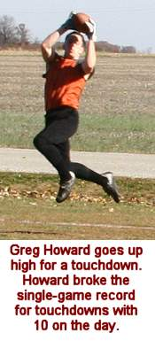
On the first play of the 4th quarter,
with the Flemish Giants in desperate need of a score, Sanders looked for
Howard deep down the sidelines, but overthrew him by a few steps and Patrick
Cork, who was playing safety, picked it off and returned it 25 yards for
a touchdown and suddenly the lead was 128-91 (VIDEO). "We hadn't played with a safety the
entire game because we were doubling Henney," said Chris. "Since
we finally had a nice lead, Patrick decided to play safety with the idea
of preventing a long touchdown pass. Then he picked off the first pass they
threw when he was back there. It was another one of those plays that worked
out perfectly for us." After the score was 98-91 with 4:30 to go in
the third quarter, the Quokkas went on a 30-0 run in less than five minutes
in a matter of just 10 plays. The ten play stretch to put the game away
was: touchdown to Williamson, Giants incomplete pass and completion to Howard,
interception, completion to Chris, touchdown to Wilson, Giants incomplete
pass, safety, touchdown to Chris and interception return for a touchdown
by Patrick. "It's not hard to figure out where the game was won today,"
added Patrick. "Some years you can point to a handful of spots in the
game where one or two plays may have changed the outcome. This year, it
was that quick five minute stretch that made all the difference."
Down 128-91 with 24:30 to play, the
Flemish Giants finally got back on track with a one-yard touchdown pass
to Howard, giving him a new Cork Bowl 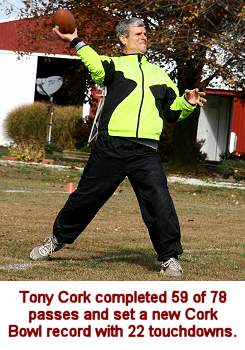 record 9 touchdowns
on the day. However, they were unable to slow down the Quokkas offense as
Tony found Patrick on back-to-back plays including a 23-yard touchdown to
move the lead to 135-98. Kevin Ryan rumbled for a 26-yard score on the next
possession to make the score 135-105 (VIDEO), and Tony's second pass of the next drive
fell incomplete. The incompletion ended another string of 13 straight completions
for Tony. From late in the second quarter, until the 20:00 mark in the fourth
quarter Tony had an unprecedented stretch with just one incomplete pass.
During that span, he was a sizzling 30-for-31 with 11 touchdowns. "I
knew we were moving the ball, but I had absolutlely no idea we were that
efficient," remarked a surprised Josh Williamson. "I have never
seen anything like that in all my years of playing this game," said
Greg Howard. "You would think they would drop a pass or he would be
a little off on a throw at some point, but it never happened."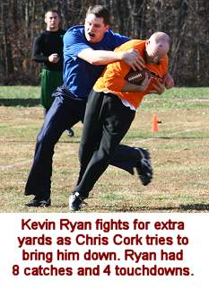
Ironically, Tony threw another incomplete
pass on the next play setting up a 4th and 19 from their one three yard
line. They went for it all as Tony threw a deep ball to Patrick just over
the outstretched arms of Henney for a 37-yard touchdown and a 142-105 advantage.
Henney scored for the fourth time on a 16 yard pass (VIDEO), Wilson scored
another touchdown to move the score to 149-112 and Howard capped an amazing
day with his 10th touchdown catch of the game to put the game at 149-119
(VIDEO). David Ulrich caught the first touchdown
pass of his Cork Bowl career and Kevin Ryan scored for the third time to
make the score 156-126 with under five minutes to play. Chris Cork put an
exclamation point on his MVP performance with an 8 yard touchdown grab (his
only catch of the fourth quarter) and Jake Hoalt scored a late touchdown
for the final score of 163-133.
Both teams scored 42 points in the
final quarter - the highest scoring period of the game. Tony Cork was 13-for-20
with 5 touchdowns while Sanders was 15-for-22 with 6 touchdowns. Greg Howard
led all receivers with 5 fourth quarter receptions while Patrick Cork and
Jeff Henney each had 4.
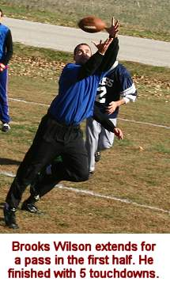 The 163 points
for the Quokkas were the second most in the history of the game - just five
off the mark of 168 in Cork Bowl 6. The Quokkas had 24 possessions in the
game and scored 22 times. The only stop of the day came on the first series
in the second quarter (not including the final two plays of the game when
they ran the clock out). The Flemish Giants had the ball 24 times and scored
on 19 of those possessions. They were stopped on downs twice, threw two
interceptions and had one safety. Cork Bowl 17 was the third game the league
compiled total yardage. The prior two totals were blown away. In Cork Bowls
15 and 16, the teams averaged just over 600 yards per game (slightly over
1,200 total yards). The Quokkas piled up 824 yards to 732 for the Flemish
Giants (1,556 total yards). The 133 points for the Flemish Giants tied them
for the most points scored by a team in Cork Bowl over the past 10 years,
and the second-highest point total ever for a losing team.
"I thought coming in on paper
that we would have to play a perfect game to win," stated winning quarterback
Tony Cork. "And we executed our game plan about as well as we could
have expected." The Quokkas were surgically precise on offense completing
over 75% of their pass attempts in the game. 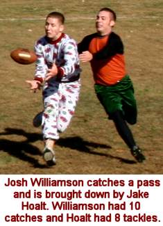 They were faced
with only four 4th down situations in the entire game - converting on three
of them. "Our game plan was to come out and get all of our receivers
involved early," added Patrick. "We wanted to move the ball and
not make mistakes. We couldn't afford to find ourselves in 3rd and long
situations. The old Coach was extremely accurate and we didn't drop more
than a handful of passes all game. If you would have told me one team would
go over 160 points I would have expected it to be the Giants."
Tony Cork shattered several records
on the day after sitting out last year's game. He finished the game 59-for-77
for a record-setting completion percentage of 75.6% thanks in part to the
30-for-31 stretch in the middle of the game. The 59 completions were a career-high
for Cork. He also put his name in the record books with an eye-opening 22
touchdown passes, breaking his own single-game record of 19. As mentioned
earlier, Chris Cork won the first MVP of his 17-year career with a resurgent
performance. Cork, who had averaged just 4.6 catches per game over the past
four seasons, hauled in 15 passes and tied his career high with 7 touchdowns.
In the three previous Cork Bowls, he totaled just 14 receptions and 6 touchdowns.
"I'm just glad I was able to help put us in a position to win,"
stated Chris. "I knew I would probably have a height advantage on whoever
was guarding me so I thought I could be a factor near the goal line."
Chris used his height advantage several times in the first half reaching
over the defenders for catches, however the two biggest catches of the game
were the back-to-back receptions in the final seconds of the first half.
"We had no answer for Chris," added Henney. "We tried several
different guys on him, but it seemed like every time they needed a big play
in the first half, Tony found a way to get Chris the ball." 14 of Corks
catches in the first three quarters as he 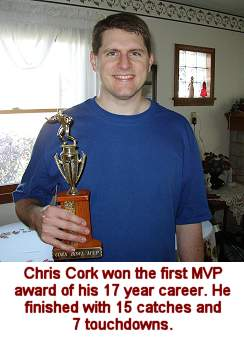 tallied just one
reception in the final frame. "I kind of ran out of gas in the final
quarter, but thankfully we had a big lead."
Brooks Wilson had another solid game
for the Quokkas finishing with 14 catches and 5 touchdowns. After only one
reception in the first quarter, Patrick Cork finished with 12 catches and
6 touchdowns. Josh Williamson, playing for the first time since Cork Bowl
13, finished with 10 receptions and 2 touchdowns giving the Quokkas four
receivers with double digit reception totals. Robert Trimble had 3 catches
and a touchdown before the injury in the second quarter and David Ulrich
hauled in 5 passes with one touchdown in reserve duty.
The Flemish Giants ran a no-huddle
offense from start to finish. It worked to near perfection in the first
half as they scored touchdowns on 10 of their first 11 possessions. "We
thought we could catch their defense off-guard if we ran a hurry-up offense,"
said quarterback Steve Sanders. "And for the most part it worked. They
were really struggling to keep up with us in the first half, but we could
never get a stop to pull ahead." The no-huddle offense caught the Quokkas
completely by surprise and they spent much of the first half scrambling
on defense. "We had no 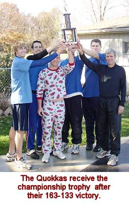 clue they'd come
out in a no-huddle," said Patrick. "It was a good strategy to
start, but I think they may have run it a little too much. Our greatest
fear was that they would throw underneath to Greg, Kevin and Jake all game
because those guys were matchup nightmares for us. We were afraid they'd
use those guys to wear us down with short routes and then hit Henney on
some deep passes, but they threw a lot of deep balls and never got anything
established underneath. Our weakest point on defense was our ability to
tackle and they didn't make us do much of that with so many long throws.
When they fell behind in the second half, I thought they'd do some quick
huddles to make sure they were on the same page. They seemed a little rushed
at times late in the third quarter."
Steve Sanders put up some impressive
numbers in defeat for the Flemish Giants. Sanders tied the previous single-game
record for touchdown passes with 19 while completing 49 of 80. He also threw
two interceptions. Jeff Henney continued to establish himself as one of
the league's top receivers with 18 receptions and 4 touchdowns. Henney has
had at least 12 catches and 4 scores in each of his four Cork Bowls. Greg
Howard had a record-setting day as well. He was hobbled by an ankle injury
for most of last year's game and only finished with 6 catches. However,
he finished just two catches shy of his career-high with 16 receptions and
broke the single-game record for touchdowns with 10 (the previous record
was 8.). "You know what they call the top performer on the losing team
don't you?" asked Howard after the loss. "A loser. I think if
we could have scored on that last 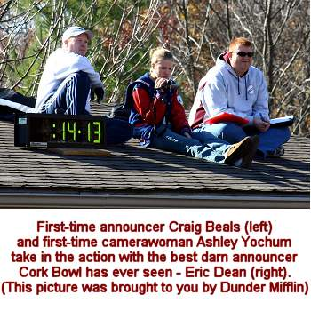 possession of
the first half and held them out of the endzone the outcome may have been
different. We had a chance to go into halftime with a lead and ended up
going in down by a score. That was a big mometum switch." Kevin Ryan
followed up his MVP performance from last year with 8 catches and 4 touchdowns
while Jake Hoalt added 7 receptions and a touchdown. Evan Woodard, playing
in his first ever Cork Bowl failed to tally a reception.
Brooks Wilson led the Quokkas with
12 tackles and Josh Williamson added 7. Robert Trimble had 5 tackles in
just over a quarter and a half and Patrick Cork had 5 tackles and 2 interceptions,
including one that was returned for a touchdown for the second year in a
row. David Ulrich had 2 tackles and Chris Cork had one. For the Flemish
Giants, Greg Howard led his team in tackles for the fifth time in the past
seven years with 14. Jeff Henney and Jake Hoalt each tallied 8 tackles,
Kevin Ryan had 6, Evan Woodard 3 and Steve Sanders 2.
Cork Bowl 17 was yet another example
of how strong the league has become. Even without three of the big names
in the game, this year's game was just as exciting and action-packed as
any other year. A number of questions remain unanswered heading into the
offseason. Will Chris Cork go out on top and retire after his MVP performance?
(Have we been asking whether Chris would retire for the past 8 years?) Will
Steve Sanders be back in China next November? Will Reggie Truitt be able
to come back from his back injury? Will Ryan Tomlinson attempt a return?
"There are a lot of things that we have to figure out in the next 12
months," stated Commissioner Patrick Cork. "We expect Willy to
play next year, but there are a lot of other situations that we'll need
to resolve. It should be a very interesting offseason."
Cork Bowl 17 Game Notes:
Patrick Cork's 12 catches moved
him over the 200 mark for his career (206)....Greg Howard's 16 catches and
Brooks Wilson's 14 catches make them the third and fourth players in league
history to top 100 career receptions (Howard - 112, Wilson - 102)...Patrick
Cork's two interceptions move him into third place all-time with 10...Greg
Howard became only the second player in league history to total 100 career
tackles (111)...Tony Cork caught the first pass of his career and David
Ulrich completed the first pass of his career in the final minute...Chris
Cork and Greg Howard are tied for second all-time with 55 touchdown receptions...Jeff
Henney's 18 catches moved him from 10th to 8th place on the career receptions
list with 68...It was the first time in Tony Cork's career he did not throw
an interception in a game...Jeff Henney failed to intercept a pass for the
first time in his four career games...
(Click Here for
More Pictures!)
Hall of Fame Announcer Eric Dean Adds
His Postgame Thoughts:
"After 4 years away
from the game I was happy to see that Cork Bowl has not lost any of its
spirit. The players may be a little older, a little slower, a few more roids,
but it was the same game. Full of scores and excitement. I was hoping for
a close game this time around. It seems like every time I am there the game
isn't close. Although the first half was very exciting with the teams trading
touchdowns throughout most of the half, the second half became ugly as the
Quakkos pulled away in the third quarter and never looked back.
Chris Cork was so impressive in
that first half. He constantly ran a slide route to the outside and Coach
hit him time after time. Chris was hard to bring down as well. His score
before halftime changed the momentum of the game. The third quarter belonged
to Coach. He was very precise with his passes, most of them short, but right
in the hands of his target. The fourth quarter was Patrick's time to shine.
Returning the pick, and a couple other scores helped keep the Flemish Giants
from coming back. Brooks Wilson was very solid...he just kind of flies under
the radar, and David Ulrich did a nice job filling in for Robert Trimble.
I hope Robert is OK. As for Williamson, I don't know what to say! The pajamas,
the training bag, the constant hustle, it was good for Lightning to be back!
The Colonel put up good numbers
for the Flemish Giants. He has a nice touch on the intermediate passes.
He struggled a little bit with the deep ball, but his receivers didn't help
out a few times either. Howard was impressive. What a tough person to bring
down. Every time he touched the ball, you knew he had a chance score....10
touchdowns...wow! Jeff Henney is a very solid player. He has great hands
and is able to get open. He looks very smooth catching the ball and his
effort did not go unnoticed up in the booth. Jake Hoalt had a solid game,
I was impressed with his tackling. I'm sure if you ask Kevin Ryan he would
say that he was disappointed in himself. He struggled defensively and wasn't
able to grab a couple of balls, but he is very good when he catches the
ball and puts his head down and runs. I didn't think he had too bad of a
game. I really wish Evan Woodard would of been able to make a catch or two.
I only remember one ball even coming his way. Early on I thought he was
open a few times, but as the game progressed, he seemed to be covered.
Where does Cork Bowl go from here
(I always end this way)? I think it's getting harder and harder to mix the
teams up and get the best game possible. I thought the Flemish Giants had
the better team on paper, but it didn't end up that way on the field. Even
though the score was a 30 point difference, the Flemish Giants were only
two or three plays out of the game. The end of the first half and a 5 minute
stretch in the third quarter killed them. When you think about it, 94 of
the 100 minutes were extremely tight. I would like to see a little tweaking
of the fumbled snap rule. I think the ball should be down on contact or
maybe there should be a rush allowed if that happens. That's something for
the competition committee to review. I'm looking forward to future Cork
Bowls!
Eric Dean |
Back to top
Cork Bowl 17 Stats
Back to Cork Bowl |